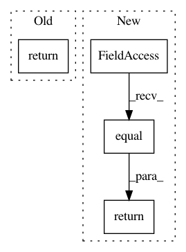

2d3a51b7d91c7ebed8251643a99d46c5eb211ed0,geomstats/general_linear_group.py,GeneralLinearGroup,belongs,#GeneralLinearGroup#Any#,33
Before Change
for i in range(n_mats):
mat_rank[i] = gs.linalg.matrix_rank(mat[i])
return mat_rank == self.n
def compose(self, mat_a, mat_b):
Matrix composition.
After Change
mat_rank = gs.linalg.matrix_rank(mat)
mat_rank = gs.to_ndarray(mat_rank, to_ndim=1)
return gs.equal(mat_rank, self.n)
def compose(self, mat_a, mat_b):
Matrix composition.
In pattern: SUPERPATTERN
Frequency: 3
Non-data size: 4
Instances
Project Name: geomstats/geomstats
Commit Name: 2d3a51b7d91c7ebed8251643a99d46c5eb211ed0
Time: 2018-09-28
Author: ninamio78@gmail.com
File Name: geomstats/general_linear_group.py
Class Name: GeneralLinearGroup
Method Name: belongs
Project Name: broadinstitute/keras-rcnn
Commit Name: df93c4e61e7ca1db25f1ee346ac0516685498b02
Time: 2017-08-15
Author: allen.goodman@icloud.com
File Name: keras_rcnn/backend/tensorflow_backend.py
Class Name:
Method Name: bbox_transform_inv
Project Name: tensorflow/models
Commit Name: 071b3b94b6e4dd3bf9c3bff64fc01e92ce2b8cdc
Time: 2020-09-25
Author: yuhuic@google.com
File Name: research/object_detection/meta_architectures/center_net_meta_arch.py
Class Name: CenterNetMetaArch
Method Name: _get_instance_indices